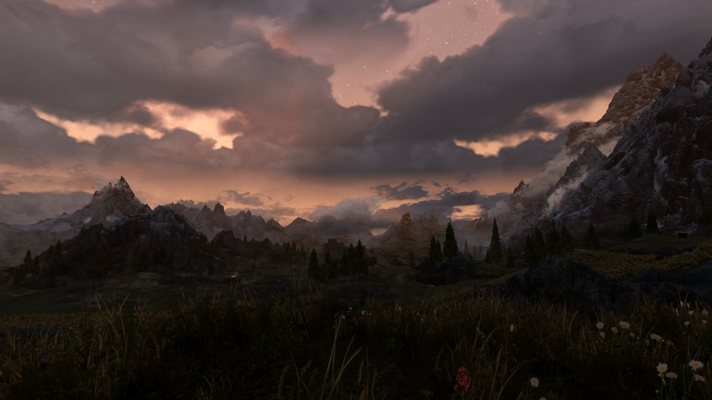

Скайрим (ориг. Skyrim) — провинция Тамриэля во вселенной The Elder Scrolls.
"Говорят, Скайрим — одно из самых опасных мест в Тамриэле. Думаю, это не так. Он прекрасен, и я счастлива, что это — мой дом"
Общие данные
Эта провинция — родина нордов. Скайрим, известный также как Старое Королевство или Отчизна, был регионом Тамриэля, заселённым людьми, бежавшими с замерзающего континента Атмора.
Правителем Скайрима является Верховный король, которого выбирает Собрание ярлов. Эта традиция была установлена после разрушительной войны Престолонаследия. Нарушение этой традиции карается смертью, как в случае убийства Ульфриком Буревестником короля Торуга. Верховному королю подчиняются все ярлы. В целом модель власти в Скайриме напоминает федерацию, так как владения имеют некое подобие автономии, но при этом подчиняются Королю.
География
Скайрим расположен на севере Тамриэля. Граничит с Хай Роком и Хаммерфеллом на западе, Сиродилом на юге и Морровиндом на востоке. С севера омывается водами моря Призраков.
Климат Скайрима весьма холодный, хотя в недолгое скайримское лето природа оживает. В Империи бытует стереотип, что от Скайрима стоит держаться подальше: не только из-за снежных бурь, но из-за страсти нордов к спиртным напиткам, особенно к мёду.
Рельеф
Провинция имеет гористый рельеф, что делает передвижение по ней весьма проблематичным. Восточная граница Скайрима проходит по высоким и безжизненным горам Велоти. Существует два перевала, которые связывают Скайрим с Морровиндом. Первый перевал — это Данметское ущелье, которое путники пересекают при путешествии из Виндхельма в Блэклайт. Второй перевал расположен на дороге между Рифтеном и башней Силград. Южная граница проходит по не менее высоким горам Джерол. Перевал через горы Джерол — Белый Проход — исключительное, с исторической точки зрения, место. Существуют также и другие, менее известные перевалы через горные системы вдоль границ Скайрима. Граница с Хаммерфеллом и Хай Роком проходит по горам Друадах. В Скайриме расположена самая высокая гора Тамриэля — Глотка Мира, а также ещё пять чуть менее высоких горных вершин.
Малые горные системы существуют и в глубине провинции — это горы во владениях Хаафингар, Винтерхолд, Хьялмарк и Фолкрит. Прибрежные территории Скайрима по большей части представляют собой равнины, опускающиеся к морю со стороны гор. Исключение составляет равнина в Хьялмарке. Это заболоченная низина, скорее всего сформированная наносами рек Карт и Хьял. Предел — это регион с крайне пересечённым ландшафтом — местные реки создали глубокие каньоны, по дну которых они протекают, образуя каскады водопадов. В центре провинции расположена огромная, лишённая лесов равнина, по которой кочуют племена великанов и их питомцы — мамонты. Многие называют эту равнину тундрой, хотя, скорее всего, это тундростепь.
История
До прихода нордов
В раннюю Меретическую эру Скайрим населяли фалмеры, «снежные эльфы», вплоть до прибытия в Тамриэль переселенцев из Атморы и начала войн за территории.
Вместе с фалмерами в Скайриме проживали и двемеры. Они построили множество городов по всему Скайриму. В каких отношениях местный клан состоял со снежными эльфами — неясно, скорее всего, они смогли договориться друг с другом о мирном сосуществовании.
Также неясно, в каких отношениях оба народа были с проживавшими в Скайриме орками, чьи селения-крепости уже тогда были разбросаны по всему региону.
После приход нордов
Скайрим находится ближе всего к Атморе и можно предположить, что переселенцы с севера часто приставали к его берегам, но, видимо, не задерживались здесь надолго. Археологические находки указывают на существование ранних человеческих поселений в Хаммерфелле, Хай-Роке и Морровинде, но не в Скайриме. К концу Меретической эры климатические условия в Атморе стали ухудшаться. Это вынудило обитателей континента искать себе новую родину. Переселение на Тамриэль приобретает массовый характер, начинают появляться чисто атморские поселения, жители которых предпочитают не подчиняться местным правителям-эльфам, а сохранять верность традициям своей родины. Одним из них был Саартал, основанный Исграмором недалеко от места его высадки — Головы Хсаарика.
Определённое время между атморцами и фалмерами сохранялся мир, но лишь до тех пор, пока фалмеры не напали на Саартал и не разграбили его. Это событие получило название Ночь слёз. Уцелевшие вернулись на Атмору, поклявшись отомстить мерам.
Вместе с Пятью сотнями Соратников Исграмор вернулся в Тамриэль и начал долгую войну со снежными эльфами, которая закончилась лишь в начале Первой эры (не ранее 140 года). Приблизительно в это же время началась Война драконов, в ходе которой власть Драконьего культа была свергнута.
Говорят, Скайрим — одно из самых опасных мест в Тамриэле. Думаю, это не так. Он прекрасен, и я счастлива, что это — мой дом